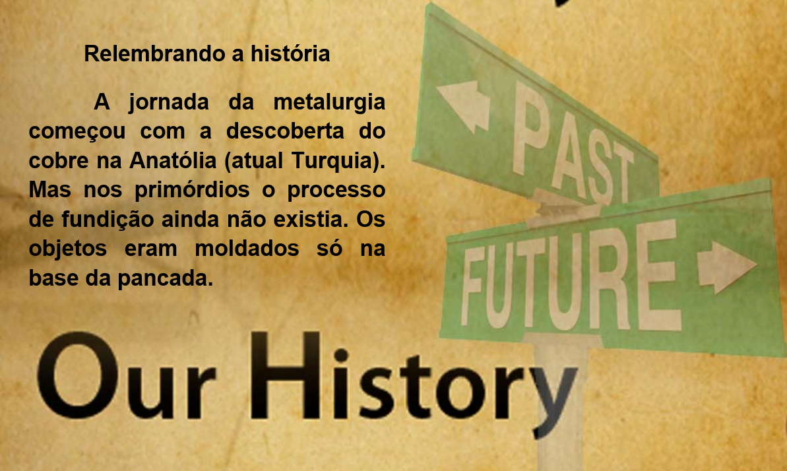

Capítulo 1: Metallurgy – Metalúrgica
What is metallurgy?
Energy and powered devices are an integral part of society. Humanity's earliest days saw the discovery of fire through wood combustion, and the used of charcoal for smelting metals dates back as early as 5000 BC. Powered devices using natural energy sources such as water and wind were introduced by the Ancient Greeks and were commonly used until the 18th century steam engine revolutionized the way devices could be powered. Various natural oils were used for a range of purposes, such as whale oil for lamps. The Industrial Revolution led to the massive use of coal as fuel, and the extraction of petroleum and various other oils became extremely important with the advent of internal combustion engines.
Nesta unidade vamos trabalhar com o vocabulário de metalurgia, e para iniciar nossos estudos, vamos conhecer um pouco da história desse setor. Vamos traduzir esse texto e expandir nossos conhecimentos.
O que é metalurgia?
Dispositivos energéticos e energizados são parte integrante da sociedade. Os primeiros dias da humanidade viram a descoberta do fogo através da combustão da madeira, e o uso do carvão vegetal para fundir metais data de 5000 A.C. Dispositivos movidos a fontes de energia naturais, como água e vento, foram introduzidos pelos gregos antigos e eram comumente usados até o motor a vapor do século 18 revolucionar a maneira como os dispositivos podiam ser alimentados. Vários óleos naturais foram utilizados para diversos fins, como o óleo de baleia para lâmpadas. A Revolução Industrial levou ao uso maciço de carvão como combustível, e a extração de petróleo e vários outros óleos se tornou extremamente importante com o advento dos motores de combustão interna.
Contextualizando – Estudo de texto
Vamos analisar nosso texto em inglês. Observe que nele há palavras grifadas de vermelho e azul. As palavras em vermelho são verbos conjugados no passado, conteúdo gramatical dessa unidade e as em azul são metais que usados na indústria metalúrgica.

Na nossa dica de biblioteca temos o dicionário de mecânica industrial e metalurgia. Nele você encontrará as palavras relacionadas a esse setor em três diferentes idiomas.

Na tabela abaixo temos uma lista de materiais que são utilizados nesse setor para fazer os produtos, no processamento ou para o acabamento.
charcoal > carvão vegetal
coal > carvão mineral
gas > gás
oil > petróleo
paraffin > parafina
petrol > gasolina
asbestos > amianto
ash > cinza
cardboard > cartão
chalk > giz
clay > barro
dust > pó
fibreglass > fibra de vidro
mud > lama
paper > papel
rubber > borracha
smoke > fumo
soil > terra
ice > gelo
steam > vapor
water > água

Nessa lista temos os elementos brutos que após o processo de metalurgia se transformam em objetos e produtos.
aluminium > alumínio
brass > bronze
bronze > bronze
copper > cobre
gold > ouro
iron > ferro
lead > chumbo
magnesium > magnésio
mercury > mercúrio
nickel > níquel
platinum > platina
Reconstruindo conhecimentos – Passado simples verbos regulares
Está na hora então de começar a falar do passado! Começaremos com o tempo verbal mais simples, o Simple Past. Ele é usado para falar de ações que já ocorreram, ou seja, que começaram e terminaram no passado. Se você está começando seus estudos do inglês, algo que pode te deixar preocupado é como falar os verbos no passado. Mas não se preocupe! É bem mais fácil que no português, porque você não vai precisar conjugá-los. Você apenas deve entender a diferença entre os verbos regulares e irregulares. Nessa unidade vamos focar nos verbos regulares.
O verbo regular é aquele que permanece bem parecido no tempo passado. Costuma-se apenas acrescentar as letrinhas ED ao final dele, como você pode ver nos exemplos abaixo:
work – worked;
talk – talked;
watch – watched.
- Se o verbo já terminar com a letra E, basta acrescentar a letra D. Veja:
love – loved;
smile – smiled;
like – liked.
- Caso o verbo termine com uma consoante + a letra Y, substitua o Y por IED. Mas se antes do Y houver uma vogal, essa substituição não é necessária e você simplesmente acrescenta o ED. Veja essa diferença nos exemplos abaixo:
study – studied;
cry – cried;
try – tried;
play – played;
stay – stayed;
pray – prayed.
- Finalmente, caso o verbo termine com o que chamamos de CVC (consoante + vogal + consoante) e esta seja a sílaba tônica da palavra, lembre-se de dobrar a última consoante antes de acrescentar o ED. Veja:
stop – stopped;
prefer – preferred;
plan – planned.
- Tudo isso pode estar te parecendo estranho e confuso, mas eis uma boa notícia: apesar de ser importante você conhecer essas regrinhas quando está se familiarizando com os verbos no passado, você não precisa se preocupar demais em decorá-las. Com o tempo e com a prática, você escreverá naturalmente os verbos da forma correta.
Aplicando ao nosso conteúdo
The solder worked a lot yesterday. > O soldador trabalhou muito ontem.
The metal finished. > O metal terminou.
The engine stopped working. > A máquina parou de funcionar.
The maganer talked with the solder. > O gerente falou com o soldador.
O que aprendi
• Nesta unidade aprendemos o vocabulário do setor metalúrgico;
• Vimos sobre a história dessa indústria;
• Na parte gramatical trabalhamos com verbos regulares no passado simples.
Praticando
Leia o trecho abaixo sobre o primeiro metal descoberto. Após e leitura faça o que se pede. Consulte nossas listas de vocabulário para realizar as atividades.
How was metal first discovered?
People first began making things from metal over 9000 years ago, when they discovered how to get copper from its []ore. They then learned how to make a harder alloy, bronze, by adding tin to the copper. ... By adding small amounts of carbon to iron, they found that they could make a particularly useful alloy – steel.
a. Destaque os verbos regulares no passado simples.
b. Liste os metais citados no trecho informativo acima.
Observe o cartoon nas falas, há uso do tempo verbal no passado simples. Explique a conversa entre os dois personagens.